防水迷宫
上盖内侧一道台阶，车身边上一道挡水立边，中间 0.8 mm 导水槽绕分缝一整圈，水顺着槽流向外面的低点。
全新 v18 外壳设计
一条线，勾勒整台车。

它的本职工作
让草坪自己保持整齐：自己出门工作，自己回家充电，下雨也不怕，需要时一按即停。好看的外壳，是为这些事服务的。
浅陶瓷灰的卡扣上盖，罩在深石墨色的一体车身上。颜色的分界，就是零件的分缝。
车头和车尾是同高的水平眉线，绕驱动轮是与轮毂同心的 R128 圆弧，所有转角统一 R20。
车头和车尾是同一条烟色镜面灯带。车头正中，摄像头、红外传感器和指示灯藏在镜片后面。
没有多余的线。顶部的两条凸起取消了，装饰线取消了，层层叠叠的托盘和凸台也取消了。留下的每一条线，都是一个零件的边，或者一束光。

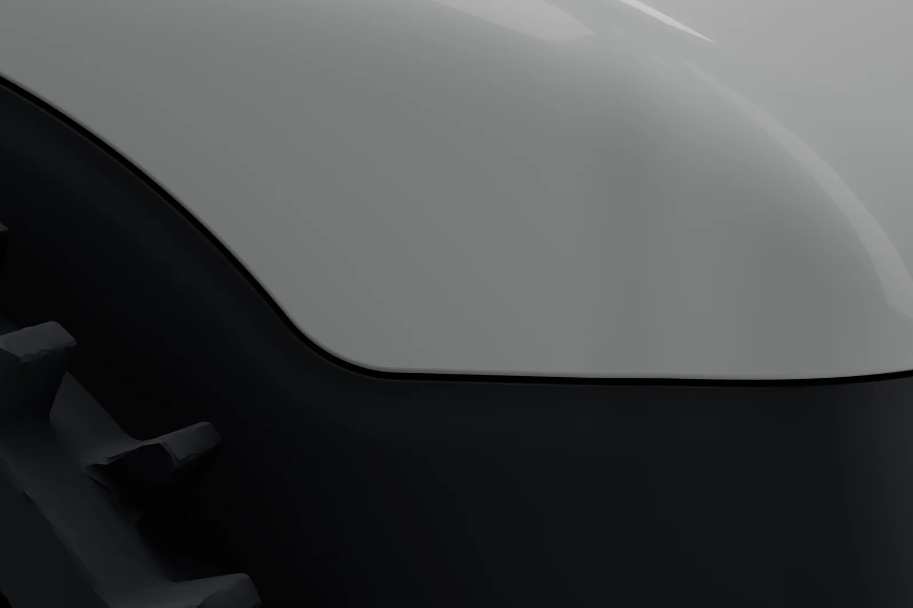
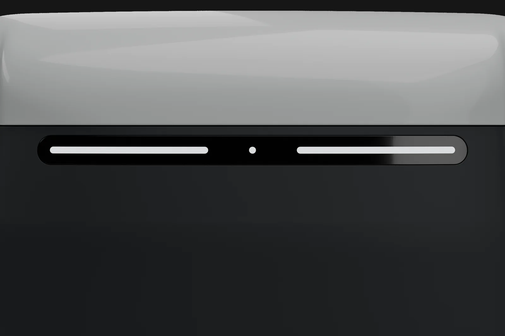
自动回充
工作结束或电量不足时，它自己开回充电座，车头朝前停进去。车头长圆形开口后面是两个左右对称的窗口，充电针穿过窗口，插到底盘的充电触点上。


铰链藏在后缝下面，盖板绕后缝外侧的一根虚拟转轴转动。合上时，外面看不到任何五金件。
舌片上的扇形齿带动钢壳卷簧和双向阻尼器。盖板自己升起，开到 75° 被轻轻卡住。
一圈连续的压缩密封条，下面是带排水口的集水槽。显示屏和控制键都在里面。
STOP
盖板上凸起的红色停止键，从任何方向都一眼可见。按下，割草机立即停止；继续往下按，盖板弹开。盖板里还预留了磁铁，控制面板上预留了霍尔传感器，让“盖板打开”也能作为停机信号。它按照 EN 50636-2-107 第 20.101.4 条对停止键的几何与颜色要求设计。

键帽直径
高出盖板
任何位置的按压力
平行导向行程
风雨无阻
割草机常年待在室外。分缝下面藏着一道防水迷宫，雨水进到 0.8 mm 的缝里，会顺着导水槽流到外面的低点。
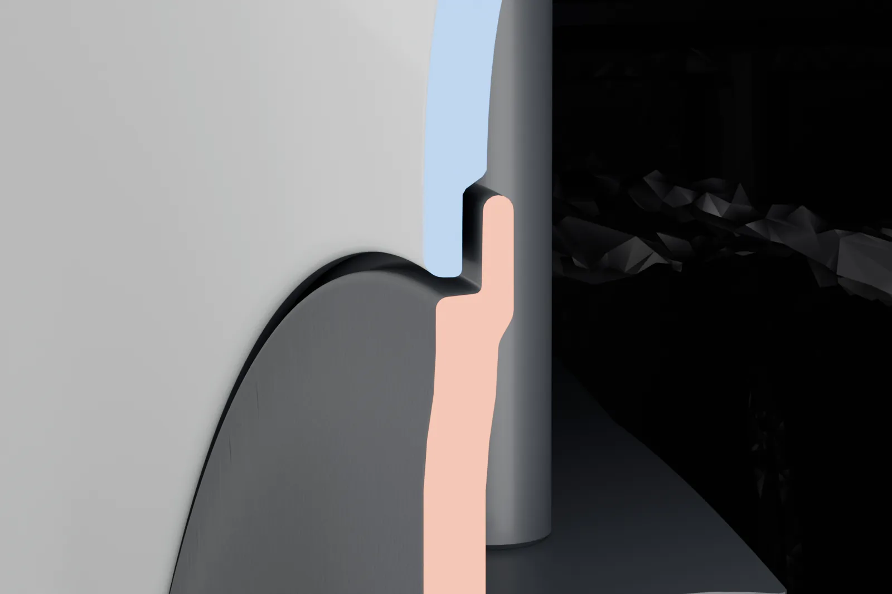
防水结构按设计几何检查；实际防护等级需要样机喷淋试验确认。
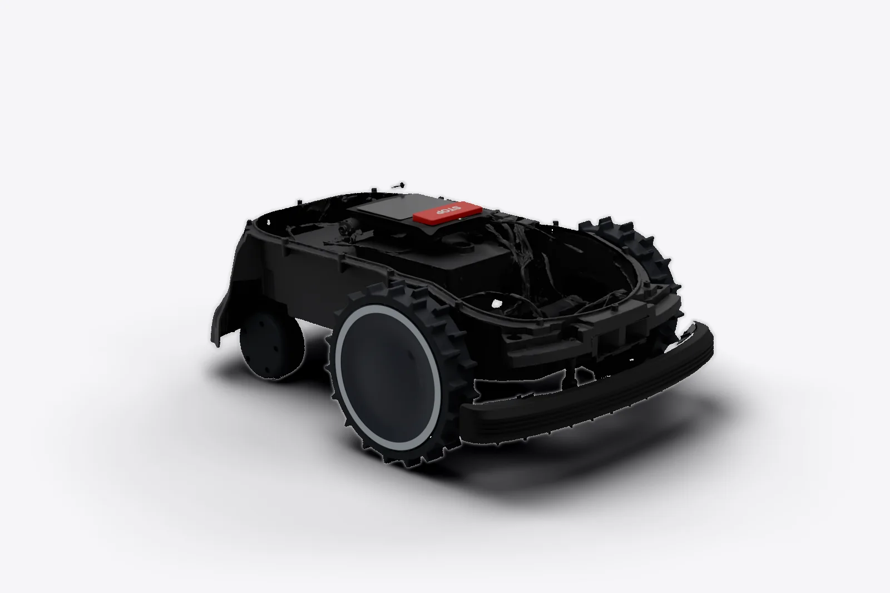
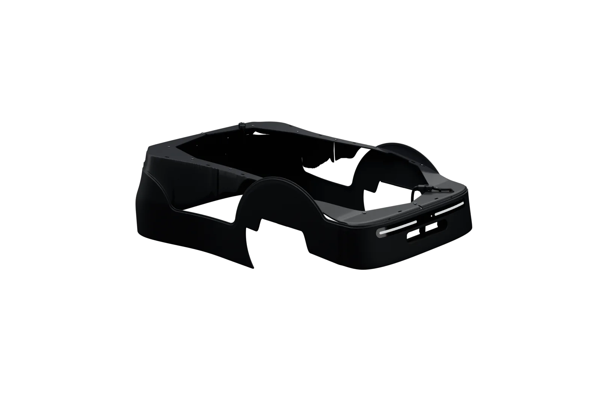
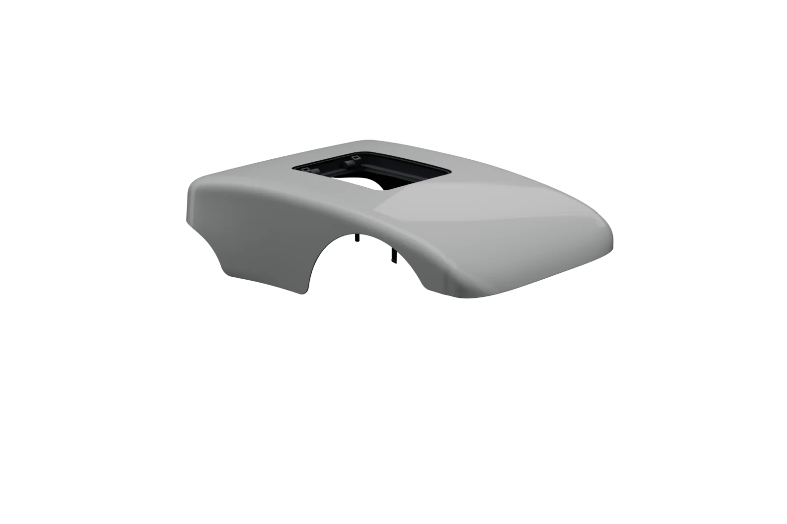
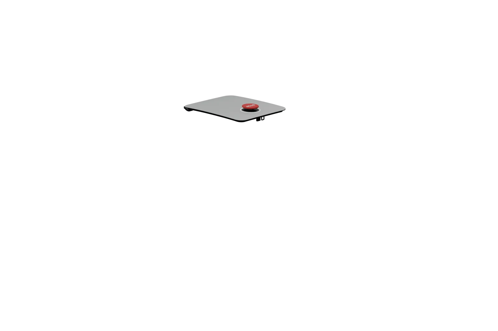
上盖和车身都是 2.5 mm 壁厚的封闭实体，每条外露的边只倒一次圆，分缝里看得见真实的壁厚。
14 颗螺丝把车身固定在底盘上，扣上上盖后全部隐藏。10 个卡脚、2 个定位销，上盖竖直取下。
上盖内侧一道台阶，车身边上一道挡水立边，中间 0.8 mm 导水槽绕分缝一整圈，水顺着槽流向外面的低点。
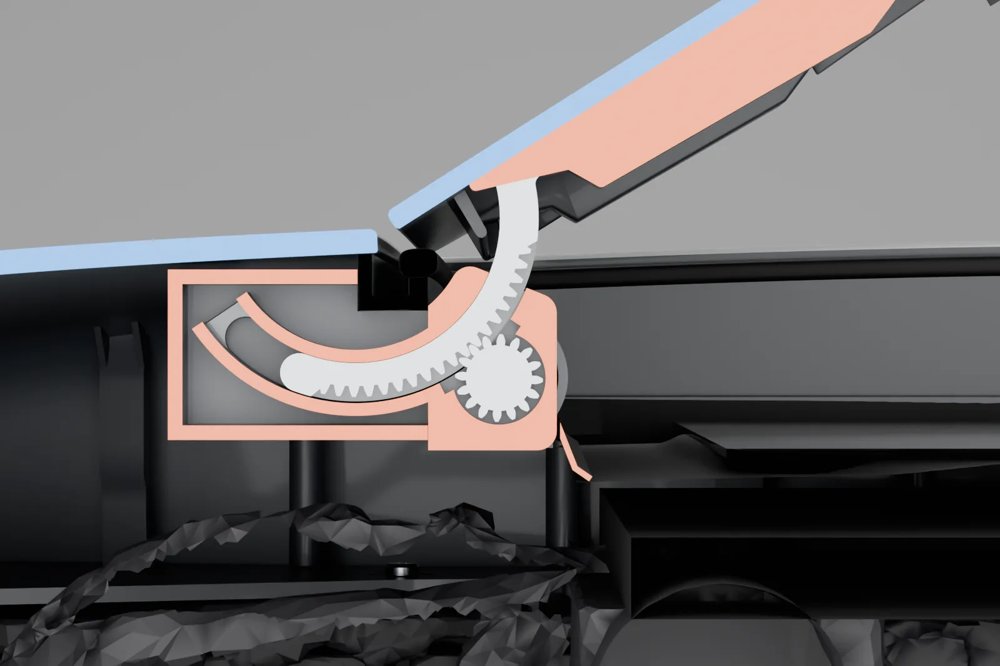
不锈钢舌片在弧形导轨里转动，限位凸耳落在钢板槽里。有限元分析安全系数 2.1 以上。
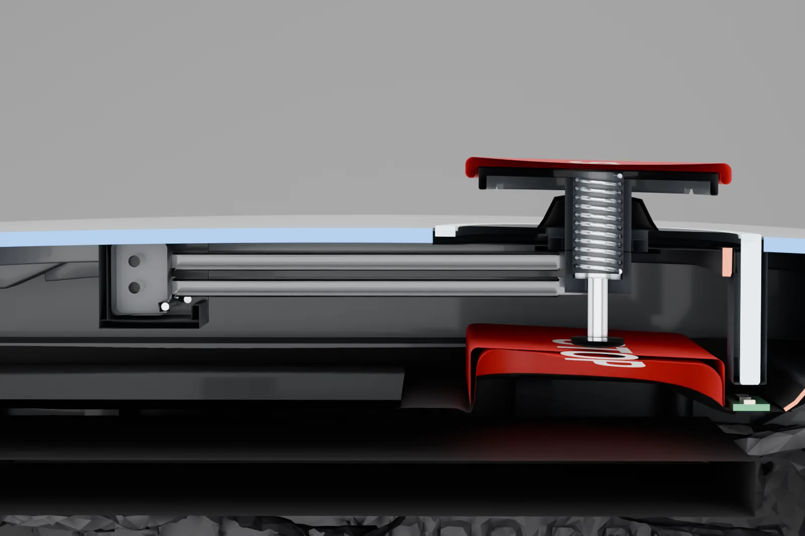
一对平行连杆让键帽平着落下，按在边缘和按在中间，力和行程都一样；柔性顶杆保护下面的真实按键。
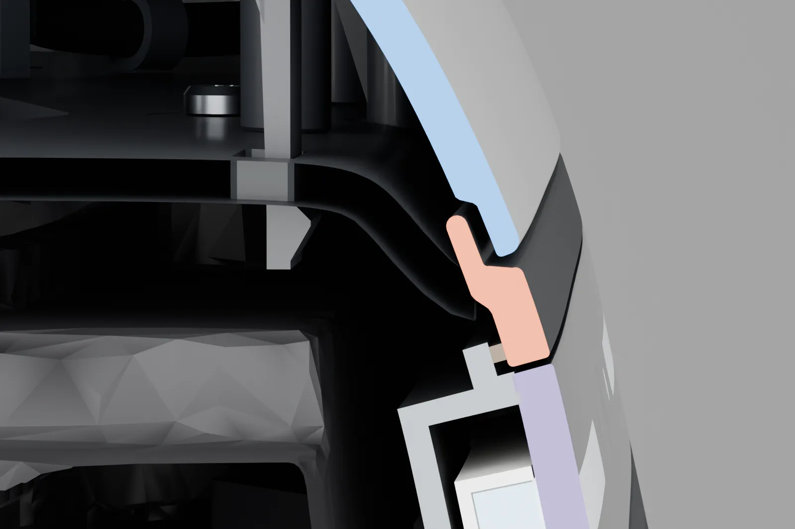
镜片与灯壳激光焊接成一个密封模块，用螺丝装进车身；线束经维修插头接到底盘，拆车身时拔下即可。
上盖和车身一起换色，红色只留给 STOP。

另一种表达
缎面银上盖，离地 180 mm 的一条水平分缝，分缝下一条 3 mm 的细灯线，一条烟色中脊饰带从车头越过车顶落到车尾。同样的工程，不同的气质。
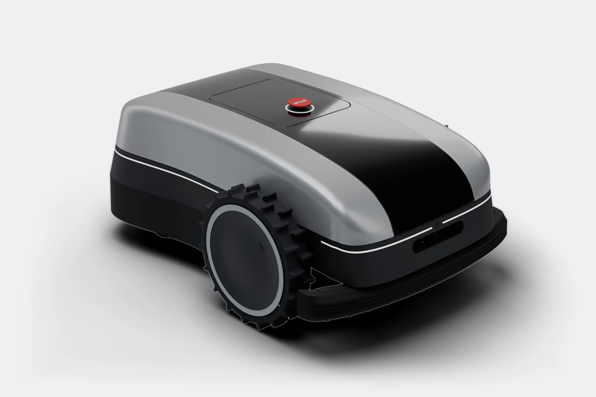
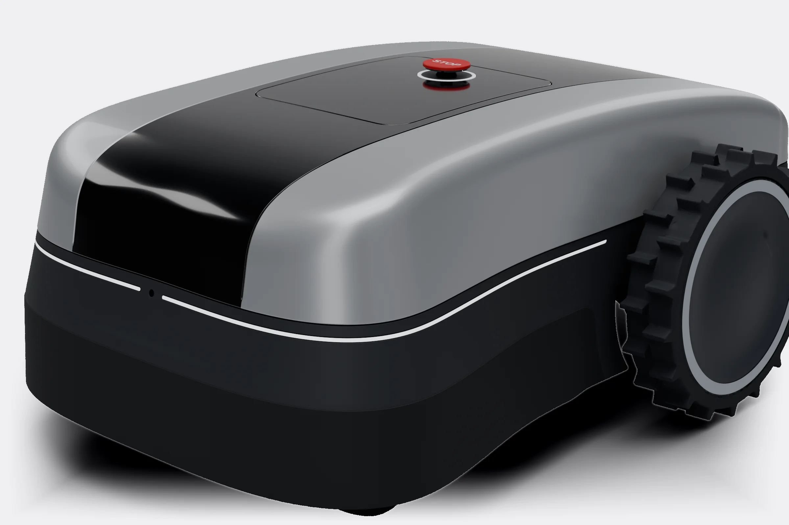
规格为外壳设计数据。底盘、驱动轮、万向轮、前保险杠与控制面板沿用原有部件。